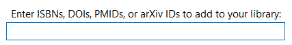

You collected a whole bunch of articles and resources while reading, now, how can you organize them all?
To organize your references, you may consider including a reference management system into your workflow.
Methods include: downloading a reference manager, or creating a note for each reference.
Academic References
- typically used with academic journal articles and books (or situations where you’d like to formally cite your references)
- a reference manager will make formatting these types of references much easier (ex. APA, MLA, Chicago styles)
- a citation key 1 may be generated, so you can copy and search for the exact reference used
- an app like Zettlr can even integrate with reference managers by using BibTex libraries
- you may still want to keep a separate folder of literature notes (see Types of Notes)
Reference Managers
- Comparison List on Wikipedia
- popular managers include: Zotero, Citavi, Mendeley
- you may have access to the paid reference managers through your academic institution, otherwise many of the software available are free
Zotero
- you can quickly add references if you know the ISBN, DOI, PMID, or arXiv IDs:

- you can download a browser extension that can add and auto-populate fields
Other options
- if you don’t want to deal with a reference manager you can create your own system of managing them:
- keep a separate folder with ‘reference notes’ - these can even be combined with literature notes (see Types of Notes)
- title each note/filename as a citation key 1
- simply link to this note as needed
An example of a citation key is AhrensHowTakeSmart2017, from the book How to take smart notes: one simple technique to boost writing, learning and thinking: for students, academics and nonfiction book writers, by Sönke Ahrens, 2017. The template for this key is: LastnameFirst3(Relevant)WordsYear
An example of a citation key is AhrensHowTakeSmart2017, from the book How to take smart notes: one simple technique to boost writing, learning and thinking: for students, academics and nonfiction book writers, by Sönke Ahrens, 2017. The template for this key is: LastnameFirst3(Relevant)WordsYear